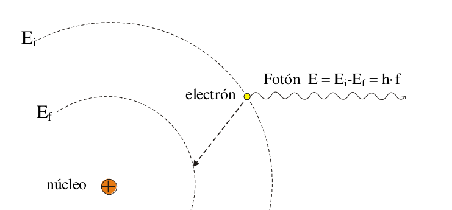
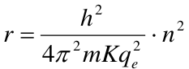

Modelos atómicos.
En cursos anteriores hemos visto cómo al interior de la materia, los átomos, se le daban diferentes interpretaciones y distintos modelos para poder explicar cómo estaba conformada.
1. Modelo de Demócrito (450 a.C.):
Propuesto por el filósofo griego Demócrito, este modelo considera al átomo como una partícula indivisible, maciza, indestructible e inmutable.
No se tenía una idea clara de su estructura interna ni de su comportamiento.

2. Modelo de Dalton (1803):
Propuesto por el químico inglés John Dalton, este modelo propone que el átomo es una esfera maciza e indivisible, como una bola de billar.
Todos los átomos de un mismo elemento son idénticos en tamaño y masa.
Los átomos de diferentes elementos se diferencian por su tamaño y masa.
Los átomos se combinan en proporciones fijas y definidas para formar compuestos.

3. Modelo de Thomson (1904):
Propuesto por el físico inglés Joseph John Thomson, este modelo, también conocido como modelo de pastel de pasas, propone que el átomo es una esfera positiva con electrones negativos incrustados en ella, como pasas en un pan.
Los electrones son partículas mucho más pequeñas que la esfera positiva.
La carga positiva del átomo es neutralizada por la carga negativa de los electrones.

4. Modelo de Rutherford (1911):
Propuesto por el físico neozelandés Ernest Rutherford, este modelo, también conocido como modelo atómico nuclear, propone que el átomo está formado por un núcleo central positivo, en el que se encuentran la mayor parte de la masa y toda la carga positiva, y electrones orbitando alrededor del núcleo en órbitas circulares.
El núcleo está compuesto por protones y neutrones.
Los protones tienen carga positiva, mientras que los neutrones no tienen carga.
Los electrones son mucho más pequeños y ligeros que los protones y neutrones.
La mayoría del espacio del átomo está vacío.
El modelo de Rutherford fue un gran avance en la comprensión del átomo, ya que demostró que no era una partícula indivisible y que tenía una estructura interna compleja. Sin embargo, este modelo presentaba algunas limitaciones, como la inestabilidad de las órbitas de los electrones, que no podía explicarse con las leyes de la física clásica.
Estos modelos atómicos, junto con los posteriores desarrollos en la física cuántica, han permitido comprender mejor la estructura y el comportamiento del átomo, sentando las bases para el desarrollo de la química, la física y otras áreas de la ciencia.

5. Modelo atómico de Bohr. (1913)
- Los electrones se mueven alrededor del núcleo describiendo órbitas circulares, pero sólo están permitidas ciertas órbitas, es decir, un electrón no puede estar a cualquier distancia del núcleo. A
las órbitas permitidas las llamó estados estacionarios. - Un electrón mientras gira en una órbita permitida tiene una energía definida y constante, es decir, gira sin perder energía. (Este postulado no se admitiría en la física clásica).
- Sólo se emite luz (un único fotón) cuando un electrón pasa de un estado estacionario superior (de energía $E_i$) a otro inferior (de menor energía $E_f$) . Por tanto la energía de dicho fotón vendrá dada
por $hf = E_i – E_f$ donde $E_i$ y $E_f$ corresponden a las energías de los estados estacionarios superior (o inicial) e inferior (o final) respectivamente. Si lo vemos en términos de distancia al núcleo, el
estado estacionario superior correspondería a una órbita más alejada del núcleo que la órbita correspondiente al estado estacionario inferior.

- Bohr supuso también que la cantidad de movimiento angular o momento cinético de un electrón respecto al centro del átomo (más precisamente, su módulo) no podía tener cualquier valor sino
que éste debía ser un múltiplo entero de h/2.
$$L=n\frac{h}{2\pi}$$ donde "n" es el número cuántico principal. (n=1,2,3,... niveles energéticos)- El momento angular recordamos que es $$\vec L = \vec r x \vec p$$ , en módulo y si el radio es perpendicular a la velocidad
L=mvr
- El momento angular recordamos que es $$\vec L = \vec r x \vec p$$ , en módulo y si el radio es perpendicular a la velocidad
- Para el átomo de hidrógeno se conoce el valor de su radio:

Aunque en este tema nos basaremos sobre todo en el modelo de Ruttherford existen modelos más precios como son el modelo de Bohr o incluso el actual, de Chadwick.
Puedes consultarlos aquí.